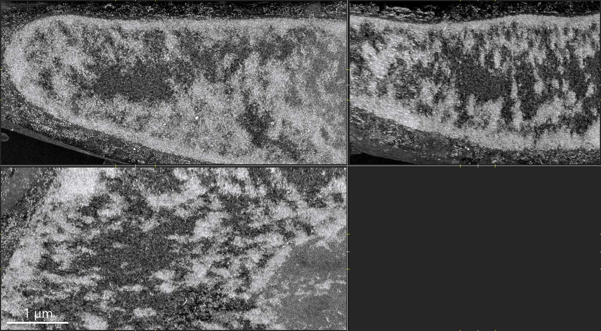

Envelope and periphery
The nucleus as a compartment, not a flat outline
FIB-SEM sections place the nuclear boundary inside the surrounding cytoplasm, making the envelope, adjacent organelles, and peripheral chromatin context easier to discuss together. This is useful for explaining why nuclear architecture is both a genome-organization problem and a cell-geometry problem.
Related nuclear envelope review